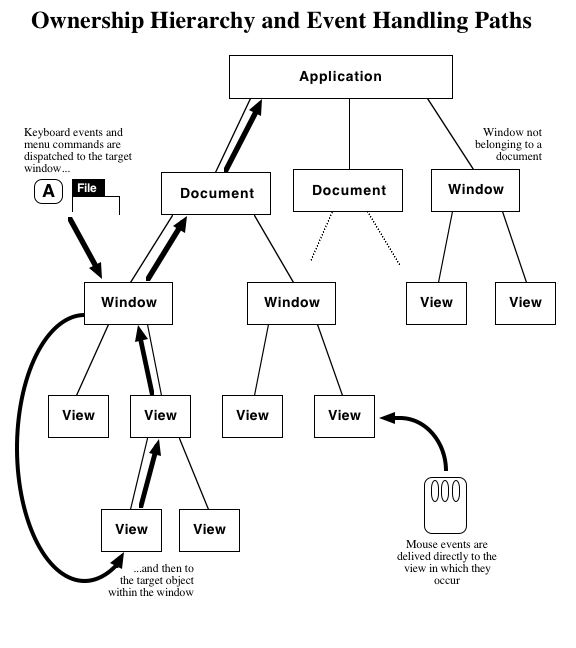
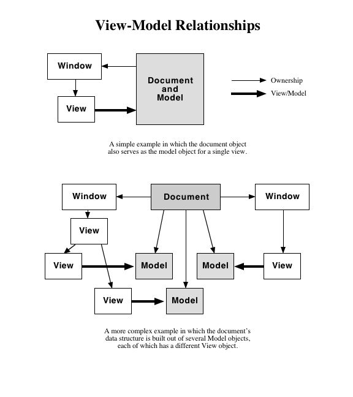

This section briefly describes the main classes making up the PyGUI application framework and how they interact.
There is exactly one Application object which looks after everything that is global to the application. If your application is very simple, you may not even need to know about the Application class - an instance of it will be created automatically when needed. If you want to make use of the Document-View architecture, however, you will probably want to define a subclass of Application and add your own code to it.
A Document object represents an application data structure which can be stored in a file. A Document is also a Model so that it can have Views attached to it (see below). If the data structure is simple, it could be contained entirely in the Document object. A more complex data structure might be composed of many objects, with a Document object at the head. Some or all of these sub-objects may be Models so that Views can be attached to parts of the data structure.
A Window represents a top-level window on the screen. Windows serve as containers for Components, which are all the usual user interface widgets such as buttons, scroll bars, text fields, etc. Some kinds of Components are also Containers. A Container can contain other Components and clip them to its boundary. Window and View, for example, are subclasses of Container.
A View is a general-purpose Component for displaying graphics and handling input events. A View can be associated with a Model representing the data structure that it is to display. There can be many Views attached to each Model, and when the Model is changed, all of its Views are notified so that they can update themselves.
There are ownership relationships between Application, Document, Window and Component objects. The Application is at the top of the hierarchy, and owns all of the Documents. Each Document can own some number of Windows, each Window owns all of its contained Components, those Components which are Containers own all their contained Components, and so forth. There can also be Windows that do not belong to a Document and are owned directly by the Application.
The ownership hierarchy serves two purposes. It defines a path for handling events (see Event Handling), and it allows a Document to be closed when all the Windows belonging to it have been closed.
Figure 1 below illustrates the ownership relationships, and Figure 2 shows some examples of how View-Model relationships might be set up.

Figure 1

Figure 2